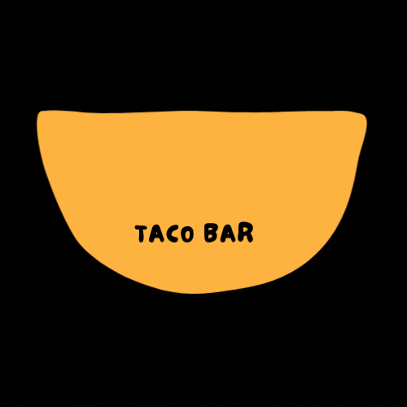

About us
Oaxaca Taco bar is run by husband and wife team, Jose and Maria Rodriguez who are both from Oaxaca in Mexico. They are passionate about Mexican food and most importantly they love Tacos! They wanted to bring a taste of home to Dublin city, as a result Oaxaca Tacos Bar was born. Every item been carefully selected as they pride themselves on supplying only the best and most authentic Mexican Tacos. Their mission in life, to get Ireland cooking and eating real Mexican food.
"100% the best Tacos in Dublin!"
- Lovin Dublin

Copyright 2022 Oaxaca Taco Bar